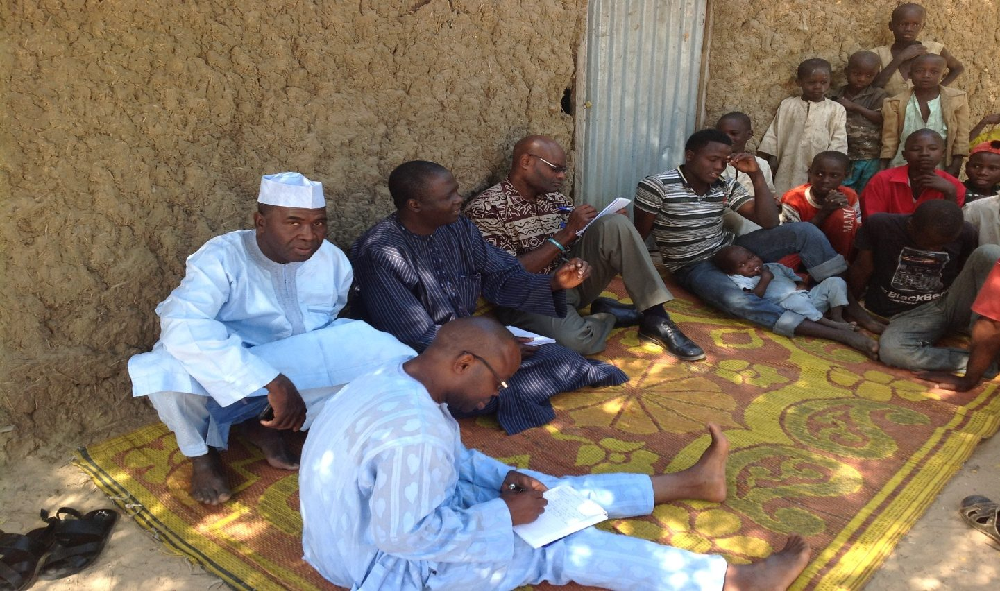

Al'ummar da ta san haƙƙinta na iya neman shugabanni su yi riƙon amana.
COMSSI ƙungiya ce mai zaman kanta, marar riba kuma marar ɗaure wa jam'iyyar siyasa, a Kano. Muna taimaka wa al'ummomi masu rauni su fahimci kasafin kuɗi, dokoki da ayyukan gwamnati, su kuma yi magana kan ilimi, lafiya da adalci.

Dalilin kafa mu
Wasu ƙwararrun masu aikin raya ƙasa ne suka kafa COMSSI bayan sun ga matsala iri ɗaya na maimaituwa. Idan kuɗin gwamnati da ayyukan jin daɗi ba su isa ga jama'a ba, matasa kan bar makaranta, su yi ƙaura, ko su faɗa hannun masu fataucin mutane da 'yan daban siyasa. Galibi cin hanci da rashawa da watsi da jama'a ne ke haddasa hakan.
Muna a lamba 185 Titin Zariya, Kano, muna aiki da ƙungiyoyi masu zaman kansu, ƙungiyoyin al'umma da hukumomin gwamnati. Hanyarmu ita ce riƙon amana ga jama'a: ba mutane bayanai da ƙwarewar tambayar yadda ake amfani da dukiyar jama'a.
Hukumar Kula da Harkokin Kamfanoni (CAC) ta amince da sunanmu (CAC/IT/NO81968), kuma Kwamitin Amintattu ne ke jagorantar mu. Ƙarin bayani game da mu.
Manufarmu
Wayar da kan jama'a don su san ƙwarewarsu da ƙarfinsu, su kuma samu ƙarfi ta hanyar riƙon amana.
Hangenmu
Al'umma inda marasa galihu ke samun ilimi mai inganci kuma mai araha, adalci da ɗaukaka don ci gaba mai ɗorewa.
Jama'ar da aka sanar da su na samun ingantattun ayyuka. Shi ya sa muke farawa da bayani.
Jama'ar da aka sanar da su na samun ingantattun ayyuka. Shi ya sa muke farawa da bayani.
Abin da muke yi
Fannoni takwas na aiki, dukansu bisa tunani ɗaya: jama'ar da aka sanar da su na samun ingantattun ayyuka. Duba cikakken bayani.
Gaskiya a kasafin kuɗi da shigar jama'a cikin harkokin mulki
Muna taimaka wa jama'a su fahimci yadda ake tsara da kashe kuɗin gwamnati, su kuma shiga a dama da su.
Ilimi da koyon karatu da rubutu
Ajujuwan manya, darussan waje ga masu jarrabawar GCE, SSCE da NECO da waɗanda suka bar makaranta, da tallafin shiga manyan makarantu.
Wayar da kai kan lafiya
Lafiyar haihuwa da ta matasa, lafiyar uwa da yara, cutar HIV/AIDS, da yaƙi da zazzabin cizon sauro, ciki har da rabon gidajen sauro a Madobi a 2022.
Yaƙi da fataucin mutane da cin zarafin yara
Wayar da kan al'umma kan haɗarin fataucin mutane da ƙaura ba bisa ƙa'ida ba, da tallafa wa yaran da aka aika birane aikin gida.
Sana'o'i da farfaɗowar tattalin arziki
Horon ƙananan sana'o'i da koyon sana'a ga matasa marasa aikin yi, mata da 'yan gudun hijira a yankunan da rikicin ta'addanci ya shafa.
Noma mai jure sauyin yanayi
Tallafa wa ƙungiyoyin manoman karkara su rungumi fasahohin noma masu ɗorewa.
Tattara bayanan take haƙƙin ɗan Adam
Bincike da wallafa littafi kan take haƙƙin ɗan Adam a Arewacin Najeriya, tare da Kano da Bauchi a matsayin misali.
Gina ƙwarewa da horaswa
Horar da jami'an gwamnati, ƙungiyoyin farar hula da shugabannin al'umma kan kula da kuɗaɗen gwamnati, sa ido kan kasafin kuɗi da rubuta rahoto.
Tarihin aikinmu tare da manyan abokan hulɗa
Shekaru 15 na aiki tare da EU, DFID, Pathfinder da sauran abokan hulɗa a Kano da Arewacin Najeriya.
- 2008Mun taimaka wajen ƙaddamar da COBTAK, Ƙawancen Masu Ba da Shawara kan Gaskiyar Kasafin Kuɗi a Kano.
- 2022Mun gudanar da wayar da kai da rabon gidajen sauro don yaƙin kawar da zazzabin cizon sauro a Madobi.
Wasu daga cikin abokan hulɗarmu

Ku yi aiki tare da mu
A shirye muke mu yi aiki da hukumomin gwamnati, abokan raya ƙasa, masu ba da agaji da ƙungiyoyin al'umma don amfanin talakawa.
Ku zama abokan hulɗa ko masu tallafi
Mu tsara aiki tare kan riƙon amana, lafiya, ilimi ko sana'o'i.
Mu fara maganaKu zama masu sa kai
Ku ba da lokacinku da ƙwarewarku. Masu sa kai na taimaka a ajujuwanmu, horaswa da wayar da kai.
Ku ba da gudunmawaKu nemi ƙwarewarmu
Ƙungiyarmu na ba masu ba da agaji, ƙungiyoyi da al'ummomi shawara kan lafiya, jinsi, wayar da kai da harkokin kasuwanci.
Tambayi game da shawarwariTuntuɓe mu
Lamba 185 Titin Zariya, Kano, Najeriya+234 803 711 5519
+234 803 787 7859
dgrassroot@yahoo.com
Kana son aika saƙo a rubuce, ko ganin taswira da tambayoyi?
Bude cikakken shafin tuntuɓi